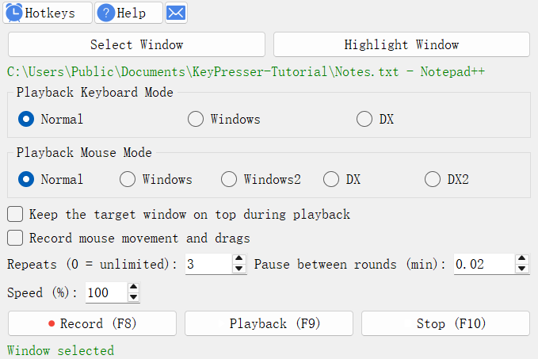

Record and replay Notepad++ tab clicks on Windows
Use KeyPresser’s Window Recorder to switch between two open documents three times. The Notepad++ Macro menu records editor commands. This exercise uses a Windows mouse recording to reproduce clicks on the tab bar.
Watch the English Notepad++ walkthrough on YouTube.
Record one round
- Open two document tabs in one Notepad++ window. Bring the first tab to the front.
- In KeyPresser, open Window Recorder, select Select Window, and choose the Notepad++ window. Set both keyboard and mouse input modes to Normal.
- With the default shortcuts, press F8 to start recording. Click the second tab, then the first. Press F10 to stop and select the saved recording.
Replay the recording three times
- Set Repeats to 3, Speed to 100%, and Pause between rounds (min) to 0.02 for about 1.2 seconds between rounds.
- Return Notepad++ to its starting layout and press F9. Each round switches to the second tab and back, for six tab clicks in total.

If playback clicks the wrong place
Confirm that Window Recorder is still bound to the same Notepad++ window. Keep the tab order and widths, window size, and display scaling as they were during recording. If the layout changed, record the clicks again and test with one repeat before running three.
If a shortcut does nothing, check the shortcuts displayed in Window Recorder. The steps above use the defaults.